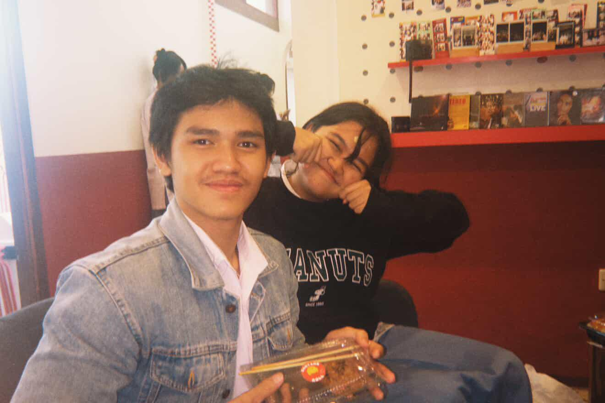
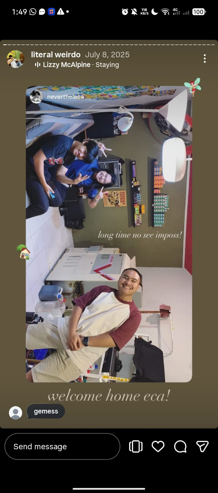
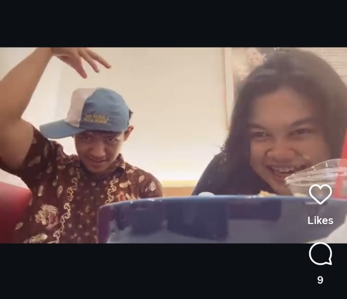
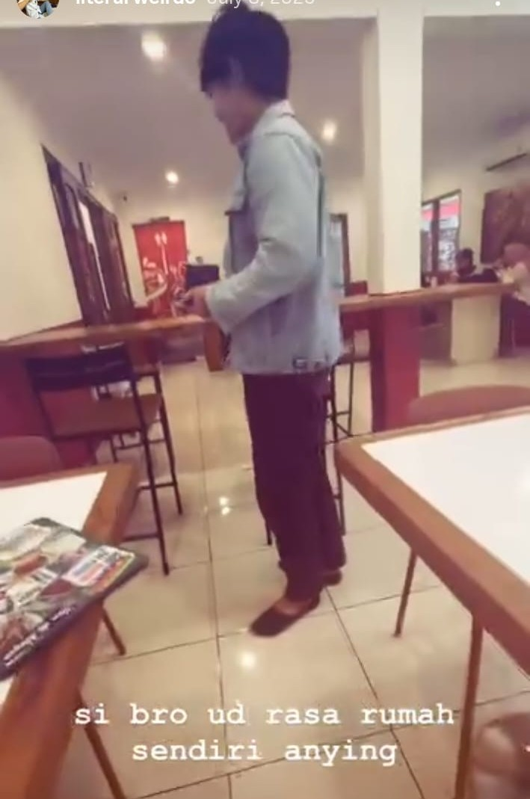
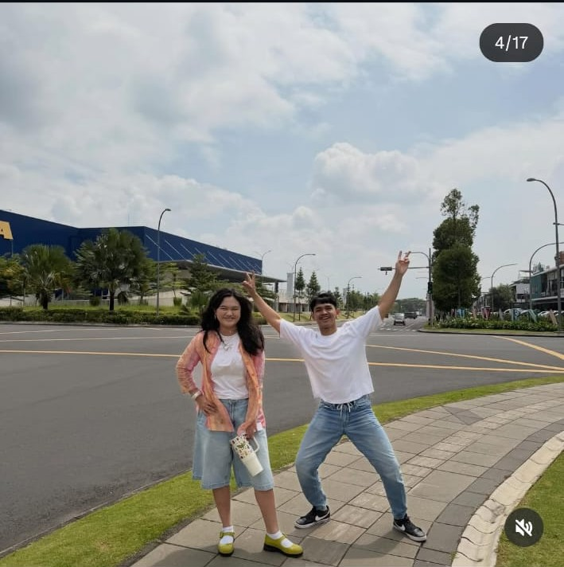
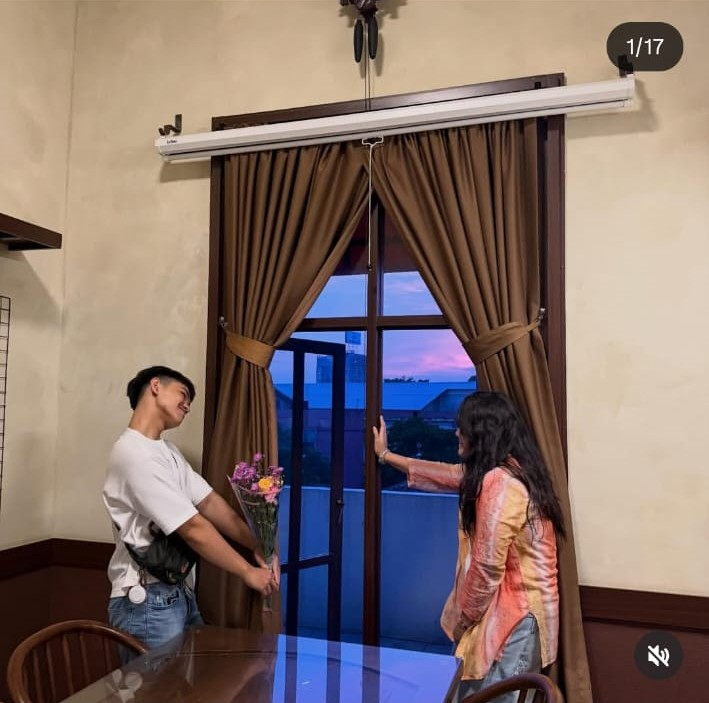
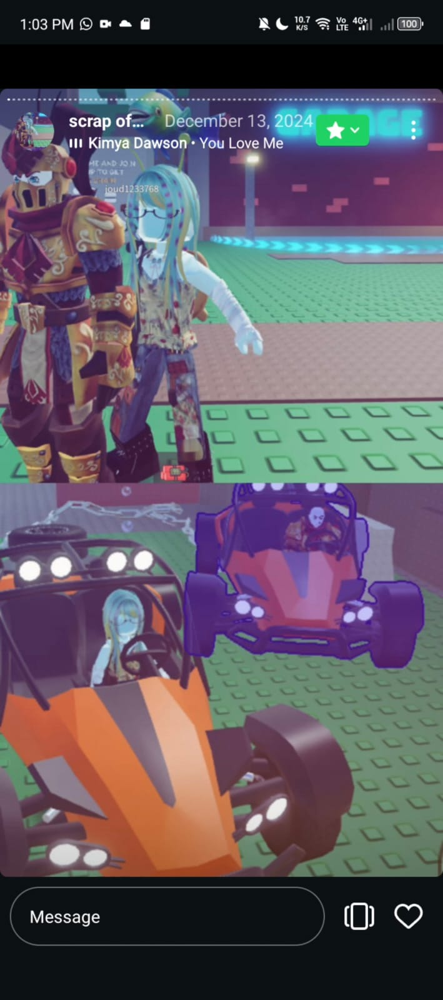
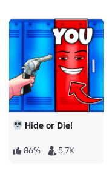
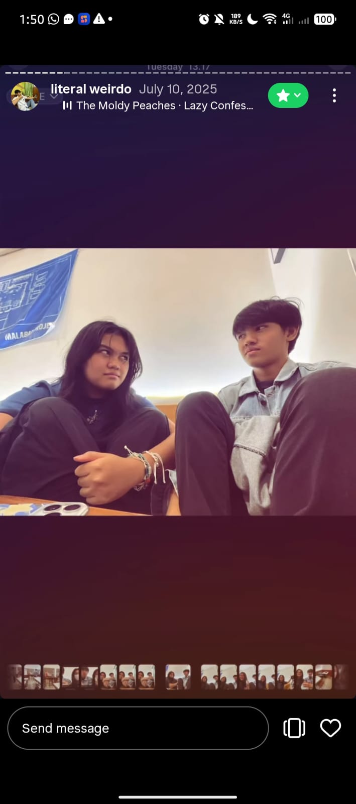
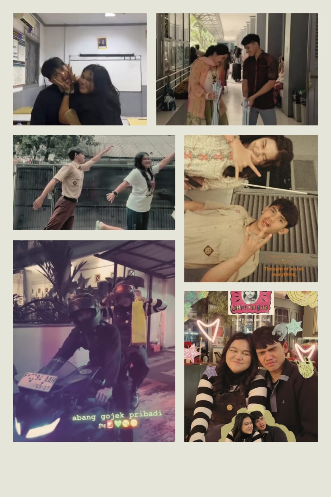

the beginning
malabar daysJUJUUURR le gua bingung mau nulis surat ini gimana yee.
Cause looking back, and if i think about it there are so many random things that somehow became so meaningful because of you le.
Dari waktu kita di UD masa sender-senderan malu-malu AY GAYA AH, terus jadi sering nganterin lu pulang sambil sok cool sok santai padahal deg-degan, terus kita sering nongkrong di malabar buat liat kamera analog yang awalnya bahkan gua bener bener se clueless itu jirs. Sekarang malah jadi ikut suka tipis tipis juga gara-gara lu.

topi ajaib
the nyeker incidentAnd i don't know how or why, those "random" places, talks, ampe kejadian random kayak gua waktu itu nyeker nggak jelas di ud??? atau trik topi yang gua polongo itu malah jadi core memory semua. HAHAH.
Terus ada rumah lu. The place where we can talk about so many things that sometimes we can't tell other people about, the place where we did so many things together, sometimes just chatting, sometimes watching movies, makan makan mania, watch tiktok together, study waktu itu tka high cortisol itu, kadang main roblox juga di rumah lu, or sometimes we just hangout and dont speak a lot.

singapura
valentineDan tentunya Bandung. Dan bandungg bagikuu. I need to stop. I have a lot of fun going to Bandung with you weirdo. Mulai dari AMI 2025 sampe akhirnya kita main main ke sana lagi, ke AMI 2026 juga and even valentine there. Kita aliling aliling Bandung, Braga…, ke tempat yang stiker stiker itu, ke ITB of course. I had an amazing time with you my beloved weirdo

roblox era
roblox go raahhhIf you think about it…. Roblox has been with us since the beginning HAHAHAH. Random thoughts.
Dari Together Party Game yang jujur emosi jiwa dikit, Bloxburg waktu event natal sambil snowplowing demi kereta itu, terus ada game game horror yang lu selalu bilang 'ayo berani berani' tapi ujung-ujungnya: 'Wen duluan.' atau disconnected culs.
And of course our most recent one Hide or Die. Game high cortisol satu itu. Favorit banget tuh biarin aja.

us
more usBecause i have only little time to make this website work, i can only put those few pictures above. And trust me, those pictures barely scratch the surface of how our love is le.
The point that im trying to make is, there are so many things in my life that became my favourite cause you were in it belgis And that could be the reason why this letter is so hard to write.
gua sayang sama lu le, but the thing is we both know kalau hubungan ini nggak bisa terus jalan. Our different beliefs. The Future. College. Us with our own busyness in the future. And the important choices we must now choose wisely and carefully. Bisa jadii lee kita bakal makin sibuk. Mungkin bakal jarang ngobrol. Dan mungkin makin jauh.
And trust me, it is hurtful and not easy to accept le. But ive come to a realization that sometimes, love isn't always only about fighting for something le, there are things that are out of our control.
Tapi inget ya le, lu harus inget ini bener bener. Gua gapernah benci sama lu. Sedikit pun ngga. Sekali pun ngga
Its just I can't keep on loving you because of the things I've said tadi.
And even though things are gonna change, just know that the things we went through, all the happy, sad, funny, weird?, all those moments, those i will remember. I don't want to forget that at all. I don't want to pretend that we never happened. Cause the fact is we did happen, and its all real. And of course all of the things, pokoknya dari a sampe z tentang kita, its all precious and valuable to me.
Makasih ya le… karena udah berkali-kali ngasih gua kesempatan. Bahkan waktu awal awal gua kocak mania itu. Makasih karena udah percaya sama gua. Sampe sampe lu terbuka nyeritain semuanya ke gua. Karena udah cerita banyak hal ke gua. Semoga respons gua membantu yah belgis, semoga bisa berguna dan bermanfaat. Karena udah hadir di hidup gua selama ini. You are a blessing, truly.
And I know you will tell me not to say this, but please kalo selama hubungan inii, gua ada salaah, forgive me yaa belgis. And of course masih ada janji yang belum bisa gua tepatin juga and im sorry too for that. Masih ada sikap atau kata-kata yang mungkin nyakitin lu. Makasih karena selalu ngasih gua kesempatan buat belajar jadi lebih baik #tumbuhlebihbaikcaripanggilanmu.
What i wish for above all is Please take the good things from our relationship belgis. Forgive and throw away all the bads. Dan tolong tetep inget semua hal baik yang pernah gua bilang ke lu, karena semua hal itu bener. buat sayang sama diri sendiri, buat sadar kalau lu disayang banyak orang, dan buat terus hidup.
Cause honestly, that's what matters most belgis.
And P.S. just because nanti misal udah ngga boyfriend girlfriend this doesnt mean we cant interact, id be happy to be able to interact, to help if you need anything, just boundariesnya akan lebih banyak lee
So, with that being said, for the first and last time, as boyfriend girlfriend
Would you go to prom with me?